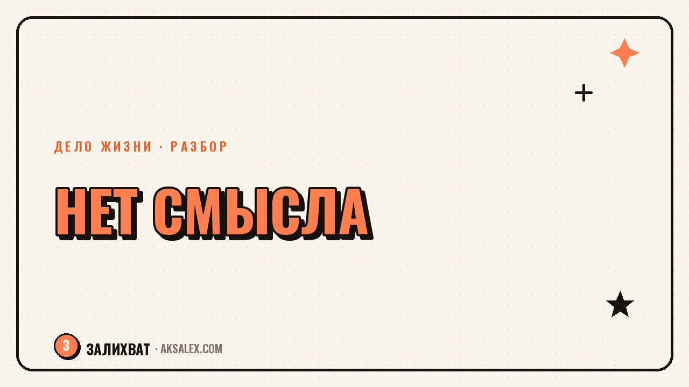

Своё дело есть, а смысла нет: что с этим делать

Со стороны всё в порядке: дело существует, приносит результат, никто не жалуется. Но внутри - тишина там, где раньше было понятное «зачем». Это не усталость и не скука от рутины - дело не истощает и не надоело, но пропало ощущение смысла. Разберём, что с этим делать, не дожидаясь, что оно само пройдёт.
Когда дело идёт, а смысла нет
Есть разница между «я устал от дела» и «я не понимаю, зачем это делаю». В первом случае тело и голова просят отдыха, во втором - отдых не помогает, потому что проблема не в силах, а в смысле. Ты можешь выспаться, съездить в отпуск, вернуться с новыми силами - и всё равно сидеть перед тем же делом с тем же вопросом.
Часто это случается не в провале, а в стабильности, когда дело перестаёт требовать борьбы за выживание и освобождается место для вопроса: а что я вообще строю и для кого. Это неприятное, но не катастрофичное состояние - оно говорит, что пора пересмотреть связь дела с тем, что для тебя важно, а не бросать всё немедленно.
Как отличить потерю смысла от выгорания и обычного спада
Три состояния легко перепутать, но у них разные причины и разные следующие шаги. Ниже - таблица, которая помогает понять, с чем именно ты имеешь дело прямо сейчас.
| Состояние | Главный признак | Что обычно помогает |
|---|---|---|
| Выгорание | Физическая усталость, раздражительность, упадок сил даже на простое | Отдых, снижение нагрузки, иногда помощь специалиста |
| Скука от рутины | Надоели конкретные задачи, но цель дела по-прежнему понятна | Смена формата задач, новый вызов внутри того же дела |
| Потеря смысла | Силы есть, задачи понятны, но пропало «зачем» и «для кого» | Пересмотр связи дела с ценностями, а не отдых |
Если не уверена, какой пункт твой - ориентируйся на отдых. Если после нормального отпуска вопрос «зачем» остаётся таким же острым, это больше похоже на потерю смысла, чем на усталость.
Что стоит спросить себя первым делом
Вопросы, с которых можно начать
- Для кого конкретно важен результат моего дела - вижу я этих людей или они стали абстракцией
- Что в деле было важным для меня три года назад и осталось ли это важным сейчас
- Если бы я делала то же самое, но об этом никто не узнал - стала бы я продолжать
- Какую часть дела я бы оставила, если могла убрать половину
- Смысл пропал у всего дела или только у того, как оно сейчас устроено
Честный и неловкий ответ полезнее гладкого. Запиши ответы без редактирования и вернись к ним через несколько дней - второй взгляд часто показывает то, что было не видно сразу.
Маленькие эксперименты, которые возвращают ощущение смысла
Смысл редко возвращается от одной большой перемены - чаще он собирается из нескольких маленьких проверок. Вот несколько, которые можно попробовать в течение одной-двух недель, без резких решений об уходе из дела.
- Поговорить с одним реальным человеком, которому твоё дело помогло, и услышать это не абстрактно, а конкретно
- Неделю вести короткий дневник: что в деле за день было важным, а что - автоматическим
- Временно убрать из дела одну задачу, которая кажется обязательной, и посмотреть, что реально изменится
- Записать текстом, зачем дело начиналось, и сравнить с тем, зачем оно продолжается сейчас - для этого можно использовать и обычный ИИ-чат, чтобы быстрее разложить мысли по пунктам
Смысл не всегда возвращается тем же самым, каким был раньше. Иногда дело взрослеет, и прежнее «зачем» честно заменяется новым - это не провал, а естественная смена причины.
Когда дело не в смысле, а в выборе вообще
Бывает, что эксперименты выше не возвращают ничего - и это тоже честный результат. Он не значит, что дело было ошибкой: оно могло быть правильным решением для той, кем ты была несколько лет назад, и перестало совпадать с тем, кем ты стала сейчас.
В этом случае вопрос смещается с «как вернуть смысл в этом деле» на «что теперь важно». Это не повод всё бросать за один вечер - но повод честно признать, что дальше потребуется пересмотр, а не очередная попытка потерпеть.
Когда без специалиста не обойтись
Отсутствие смысла в деле - не диагноз и не повод записывать себя в депрессию. Но если к этому добавляются постоянная тревога, нарушения сна, апатия ко всему, а не только к делу, или мысли о собственной ненужности - это выходит за рамки вопросов к себе и дневника.
В таком случае разумнее обратиться к психологу или психотерапевту, а не искать ответ в упражнениях из статьи. Это не слабость и не поражение - это то же самое, что обратиться к врачу при длительной физической боли.
Частые вопросы
Почему пропадает смысл в деле, которое раньше нравилось?
Часто дело взрослеет быстрее, чем успевает перестроиться твоё отношение к нему. Прежняя причина заниматься делом устарела, а новая ещё не найдена.
Как отличить потерю смысла от обычной усталости?
Усталость снимается отдыхом, а потеря смысла - нет: после отпуска дело снова работает, но вопрос «зачем» остаётся тем же. Если отдых не помогает, дело скорее в смысле, чем в силах.
Нужно ли сразу менять дело, если смысл пропал?
Нет, сначала стоит попробовать маленькие эксперименты и честные вопросы к себе в течение пары недель. Резкие решения лучше оставить на потом, когда станет яснее, в чём именно причина.
Может ли нейросеть помочь разобраться в этом состоянии?
Нейросеть может помочь разложить мысли по пунктам или оформить честный ответ на вопрос «зачем», но сама не определит, что происходит у тебя внутри. Это инструмент для структурирования, а не замена разговору с собой или специалистом.
Когда стоит обратиться к психологу из-за потери смысла в деле?
Если к отсутствию смысла добавились постоянная тревога, нарушения сна или апатия ко всей жизни, а не только к делу. Это признаки, с которыми лучше идти к специалисту, а не разбираться самостоятельно.
Раз тема оказалась полезной, вот что почитать следующим. Что делать, если жалеешь о выборе профессии: конкретные шаги, а не советы "полюбить то, что есть".
Читать статью →а не вручную